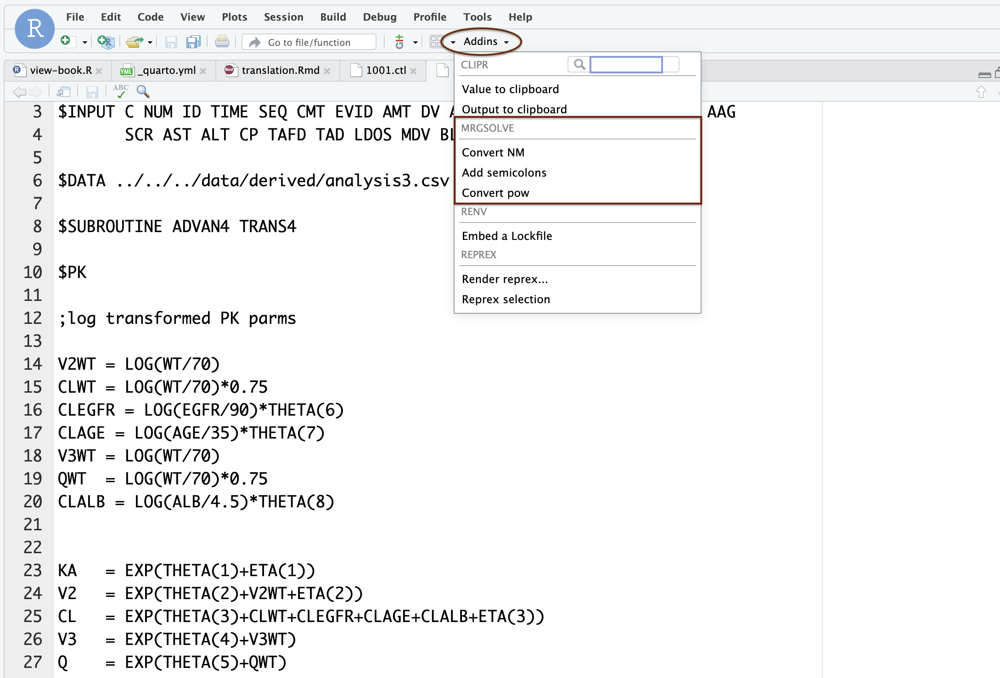

$PK
double CL = TVCL * (WT/70) ** 0.75 * exp(ETA(1));10 Model specification 2
In this chapter, we’ll keep going with model specification. This is the second chapter on model specification. See Chapter 4 for the introductory material.
10.1 Covariate model
Like NONMEM, we can use $PK (or $MAIN) to code the covariate model, random effects, F, D, R, and ALAG, and initialize compartments.
- Any valid
c++code is allowed- But we’ve added some sugar to make writing code easier
- Each line (statement) should end in semi-colon
;
10.2 C++ examples
if(a == 2) b = 2;
if(b <= 2) {
c=3;
} else {
c=4;
}
d = a==2 ? 50 : 100;
double d = pow(base,exponent);
double e = exp(3);
double f = fabs(-4);
double g = sqrt(5);
double h = log(6);
double i = log10(7);
double j = floor(4.2);
double k = ceil(4.2);Good practice to put .0 behind whole numbers.
double result = 1.0/2.0; # 0.5Lots of help on the web http://en.cppreference.com/w/cpp/numeric/math/tgamma
10.3 Random effects
There are times when you will need to code this manually. When estimating with NONMEM and simulating with mrgsolve, these matrices will frequently be imported automatically via $NMXML.
10.3.1 Omega / ETA
Diagonal matrix
$OMEGA
0.1 0.2 0.3This is a 3x3 matrix with 0.1, 0.2, and 0.3 on the diagonal.
Block matrix
$OMEGA @block
0.1 0.002 0.3This is a 2x2 matrix matrix with 0.1 and 0.3 on the diagonal. Sometimes it’s easier to see when we code it like this
$OMEGA @block
0.1
0.002 0.3Random effects simulated from OMEGA are referred to with ETA(n).
10.3.2 Sigma / EPS
Works just like Omega / ETA, but use $SIGMA and EPS(n).
For sigma-like theta, code it just as you would in NONMEM.
$PARAM THETA12 = 0.025
$SIGMA 1
$ERROR
double W = sqrt(THETA12);
Y = (CENT/V) + W*EPS(1);There is no FIX in mrgsolve; everything in OMEGA and SIGMA is always fixed.
10.4 Import estimates from NONMEM
- Use
$NMEXTor$NMXML$NMEXTreads from the.extfile- Can be faster
- Doesn’t retain
$OMEGAand$SIGMAstructure
$NMXMLreads from the.xmlfile- Can be slower
- Does retain
$OMEGAand$SIGMAstructure
This is the safest way to call
$NMXML
path = "../nonmem/106/106.xml"You might be able to use this run/project approach as well
$NMXML
run = 1006
project = "../sim/"10.5 Models in closed form
mrgsolve will solve one-, two-, and three-compartment models with first order input in closed form. This usually results in substantial speed up. Use $PKMODEL.
Starting with mrgsolve 2.0.0, you can pick the model with an advan number:
$PKMODEL advan = 2- 1 = One-compartment
- 2 = One-compartment, first order absorption
- 3 = Two-compartment
- 4 = Two-compartment, first order absorption
- 11 = Three-compartment
- 12 = Three-compartment, first order absorption
When you initialize with advan but don’t name compartments, mrgsolve will set up compartments A1, A2, etc.
Otherwise, pass the compartment names as cmt.
$PKMODEL advan = 2, cmt = "DEPOT,CENTRAL"Certain symbols are required to be defined depending on the model. mrgsolve models are always parameterized in terms of clearances and volumes except for absorption, which is in terms of rate constant. See ?PKMODEL for details.
These can be defined as a parameter or a derived quantity in $PK.
Compartment names are user-choice; the only thing mrgsolve cares about is the number of compartments.
10.6 Plugins
10.6.1 autodec
Historically, you have had to declare the type of any new variable you want to create.
$PK
double KE = CL/V;For most models, the numeric variables you declare are likely to be floating point numbers … with type double.
We created a plugin that tells mrgsolve to look for new variables and declare them for you.
$PLUGIN autodec
$PK
KE = CL/V;10.6.2 nm-vars
mrgsolve historically used
CENTdxdt_CENTF_CENTD_CENT
etc. When we started mrgsolve, this was a really nice feature because you didn’t have to think about compartment numbers. However, this made translation of the model more difficult.
When you invoke the nm-vars plugin, you can write in a syntax that is much more like NONMEM.
For example
$PK
F2 = THETA(3);
ALAG2 = EXP(THETA(4));
$DES
DADT(1) = - KA * A(1);Other convenience syntax
LOG()andlog()EXP()andexp()SQRT()andsqrt()
Regardless of whether you have nm-vars invoked or not, you can still use THETA(n) to refer to parameter THETAn.
Try the nm-like model in the model library for an example.
mod <- modlib("nm-like")
mod@code10.7 New features as of mrgsolve 2.0.0
10.7.1 Use base ** power
In C++, this calculation requires a function called pow().
CL = THETA(1) * pow(WT/70, 0.75);Starting with mrgsolve version 2.0.0, we can do this calculation using **
CL = THETA(1) * (WT / 70) ** 0.75; Notes:
- No plugin required
- mrgsolve does the conversion under the hood
- See
?convert_powand “Convert pow” addin
10.7.2 Support for NONMEM/Fortran if/else/then
In mrgsolve and C++
if (SEX == 1) {
CL = CL * THETA(10);
}When you use the nm-vars plugin, you can keep the code you wrote in the NONMEM control stream.
$PLUGIN nm-vars
$PK
...
IF(SEX.EQ.1) THEN
CL = CL * THETA(10);
ENDIFNotes:
- IF
- IF/THEN
- IF/THEN/ELSE
10.7.3 Semicolons!
Use the semicolons plugin to have mrgsolve add them for you
$PLUGIN nm-vars semicolons
$PK
IF(SEX.EQ.1) THEN
CL = CL * THETA(10) // NOTE: no semicolon!
ENDIFUse the nm-like plugin to invoke autodec, nm-vars, and semicolons.
We recommend limiting the semicolons functionality to model code that is copied straight from a NONMEM control stream. When mrgsolve inspects the code to determine where to put semicolons, it is expecting to see NONMEM-like code. The semicolons algorithm may fail when applying to native mrgsolve or other C++ code.
10.7.4 ERR(n)
With the nm-vars plugin, mrgsolve now supports ERR(n) as an alias to EPS(n).
10.8 Addin
The Rstudio addin can be used to convert NONMEM code to native mrgsolve code.

You don’t have to convert to code to native mrgsolve syntax. If you are running a tight cycle between NONMEM and mrgsolve, you can just leave it in the NONMEM format and let mrgsolve convert it on every model load.
Once your model is finalized and you are modifying or extending for simulation, you may want to convert to mrgsolve native syntax for consistency within the model file.
10.8.1 Rcpp (random numbers)
This gives you functions and data structures that you’re used to using in R, but they work in c++.
The main use for this is random number generation. Any d/q/p/r function in R will be available; arguments are the same, but omit n (you always get just one draw when calling from c++.
For a draw from U(0,1)
$PLUGIN Rcpp
$ERROR
double u = R::runif(0, 1);Note: this will slightly increase compile time.
10.9 Other blocks
- Use
$SETUPto configure the model object on load- For example, set the simulation end time
- Use
$ENVto define a set of R objects that might be evaluated in other model blocks - Use
$PREDfor other closed form models - Use
$PREAMBLEfor code that gets run once at the start of a problemNEWIND==0 - Use
$GLOBALto define variables outside of any other block
10.10 Variables and macros
There is too much syntax to mention it all here. You will find all the syntax here
https://mrgsolve.org/user-guide/specification.html#sec-variables-macros
10.11 Modeled event times
To get the model to stop at any time (even if not in the data set) with EVID 2
double mt1 = self.mtime(1.23 + ETA(1));To get the model to stop at any time with user-specified EVID (e.g. 33)
self.mevent(1.23 + ETA(1), 33);